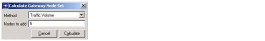

Optical Express Layer > Select Gateway Nodes Dialog Box > Calculate Gateway Nodes Set Dialog Box
Calculate Gateway Nodes Set Dialog Box
This dialog box appears when you click Suggest Nodes in the Select Gateway Nodes Dialog Box. You can use this dialog box to calculate a suggested set of of gateway nodes.
Figure 11-2 Calculate Gateway Nodes Set Dialog Box

| Home © 1987-2007 OPNET Technologies, Inc. All Rights Reserved. This software may be covered by one or more U.S. Patents. See complete patent notice in the Legal Notices section. OPNET Support Center |